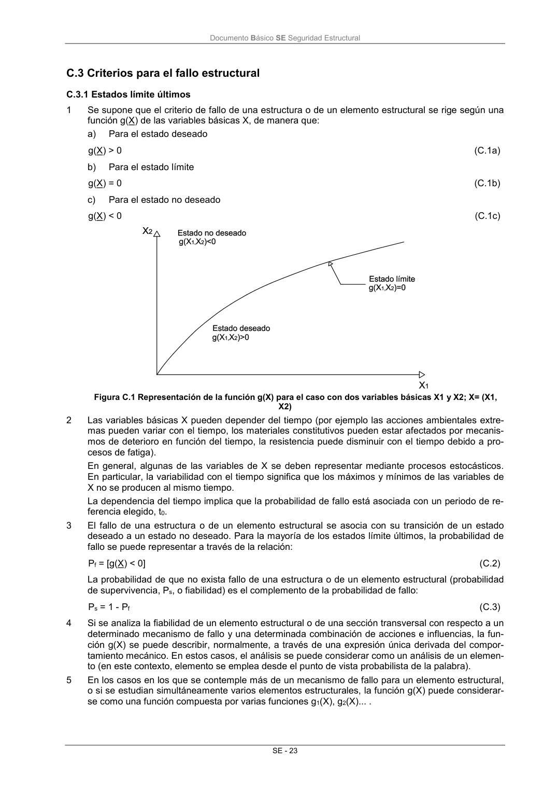

DB-SE · Página 29 · versión 2019-12-20
SHA256: ec1fbfc51b28c4d62667aec480585b76fe31727ccf1615015a5d2d2677763f8f · página física 29 de 45 · métodos de encabezado
solo si están cotejados.
Formatos: Markdown · JSON de bloques · PDF p. 29 · imagen PNG
Documento Básico SE Seguridad Estructural SE - 23 C.3 Criterios para el fallo estructural C.3.1 Estados límite últimos 1 Se supone que el criterio de fallo de una estructura o de un elemento estructural se rige según una función g(X) de las variables básicas X, de manera que: a) Para el estado deseado g(X) > 0 (C.1a) b) Para el estado límite g(X) = 0 (C.1b) c) Para el estado no deseado g(X) < 0 (C.1c) Figura C.1 Representación de la función g(X) para el caso con dos variables básicas X1 y X2; X= (X1, X2) 2 Las variables básicas X pueden depender del tiempo (por ejemplo las acciones ambientales extre- mas pueden variar con el tiempo, los materiales constitutivos pueden estar afectados por mecanis- mos de deterioro en función del tiempo, la resistencia puede disminuir con el tiempo debido a pro- cesos de fatiga). En general, algunas de las variables de X se deben representar mediante procesos estocásticos. En particular, la variabilidad con el tiempo significa que los máximos y mínimos de las variables de X no se producen al mismo tiempo. La dependencia del tiempo implica que la probabilidad de fallo está asociada con un periodo de re- ferencia elegido, t0. 3 El fallo de una estructura o de un elemento estructural se asocia con su transición de un estado deseado a un estado no deseado. Para la mayoría de los estados límite últimos, la probabilidad de fallo se puede representar a través de la relación: Pf = [g(X) < 0] (C.2) La probabilidad de que no exista fallo de una estructura o de un elemento estructural (probabilidad de supervivencia, Ps, o fiabilidad) es el complemento de la probabilidad de fallo: Ps = 1 - Pf (C.3) 4 Si se analiza la fiabilidad de un elemento estructural o de una sección transversal con respecto a un determinado mecanismo de fallo y una determinada combinación de acciones e influencias, la fun- ción g(X) se puede describir, normalmente, a través de una expresión única derivada del compor- tamiento mecánico. En estos casos, el análisis se puede considerar como un análisis de un elemen- to (en este contexto, elemento se emplea desde el punto de vista probabilista de la palabra). 5 En los casos en los que se contemple más de un mecanismo de fallo para un elemento estructural, o si se estudian simultáneamente varios elementos estructurales, la función g(X) puede considerar- se como una función compuesta por varias funciones g1(X), g2(X)... .
